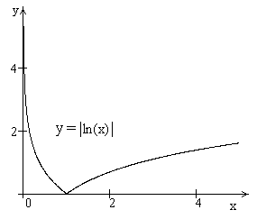

П 19ТУ№6.
Функция не
дифференцируема в точке  , так как
касательные к графику функции слева и справа от точки различны, однако функция имеет
минимум в этой точке. Функция является
строго убывающей при и строго возрастающей
при
, так как
касательные к графику функции слева и справа от точки различны, однако функция имеет
минимум в этой точке. Функция является
строго убывающей при и строго возрастающей
при  . В точке график
имеет острый минимум (так называемую угловую точку).
. В точке график
имеет острый минимум (так называемую угловую точку).
, так как
касательные к графику функции слева и справа от точки различны, однако функция имеет
минимум в этой точке. Функция является
строго убывающей при и строго возрастающей
при . В точке график
имеет острый минимум (так называемую угловую точку).